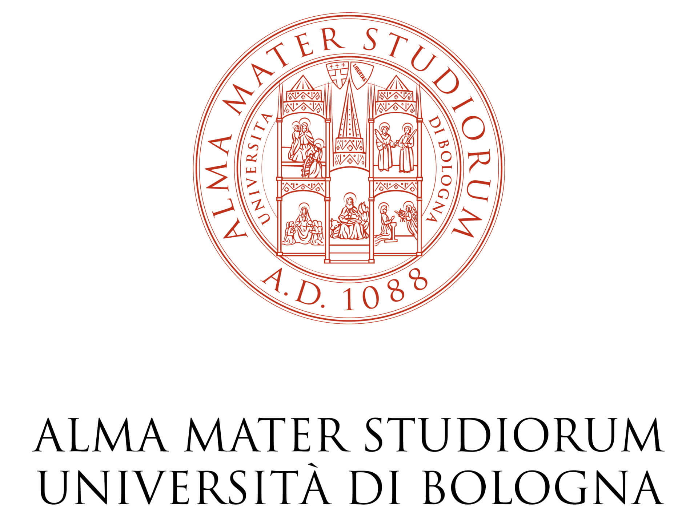
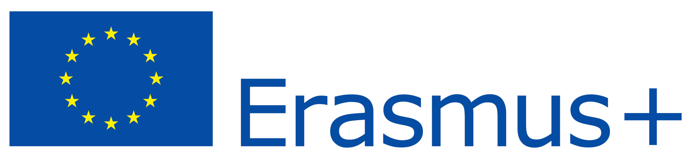

Internship at Beeline, London
June 2016. Summer, sun, 35 degrees.
I really wanted to go to holiday, to go to the beach with my friends, but I had a lot to study because I had university exams from the half of June to the half of July.
I was reading my University website, checking again and again the date and the hour of my first exam.

But before coming back to study I read: “Erasmus+: internship abroad”. Very interesting! I’ve always loved travelling, seeing new places, know different cultures.
I’ve always liked the idea of doing an Erasmus, even if the idea of studying for a whole year or a semester abroad has always scared me.
I was almost at my third year of University, the year after, I should have done an internship and the idea of living and working as a software developer in another country was so cool! It looked easier and maybe even more interesting than study for a semester abroad.
So I read the whole announcement about the Erasmus+ internships and thought about living and working for three months in another country. “Where could I go?” I thought. I know Italian and a little bit of English and Spanish. But my English is better than my Spanish and I prefer to work and code in English.

But where? I thought it was a good idea to come in UK before Brexit. I always wanted to visit London and living and working In London for three months would be so cool! So I googled “London Software House” and a lot of things like this.
How does Erasmus+ work? It allows you to do three months of internship in a company you can choose in a European Union country.
So I sent a lot of emails. One of the positive answer was the Beeline one. They said they were interested and they wanted to do a Skype interview the week after.
Beeline was not only the best option between the company interested in my internship, but it looked a very good company where to work.
The device was in my opinion amazing, it looked a very good idea, a very good design, a nice website and nice videos. Beeline looked a very good startup with a good young team, good ideas and a good device.
The week after I had the Skype Interview. It was one of my first job interviews, and it was in English, I was really scared! I talked with Mark, one of the co-founder, and wit Chet, the CTO.
I think I may not have been very good at that interview, my answers were not so good, and my English was bad.
“Three months is not avery long period, so maybe you should choose what you want to work on: the firmware of the device, the website or the smartphone app?” They asked me.
“I don’t know, maybe the app, even if I have never worked on a smartphone app”.
“Do you have some projects you can send us to show us what you can do?”
“I don’t know, I don’t think I have a whole interesting very good project, but maybe you can ask me to do something for you.”
So they asked me to do a simple compass app pointing North. I was free to make the user interface and add all the features I wanted.
It was my first smartphone app and I was really scared and excited.
They asked me to do it an about a week/ten days, but I had an exams two weeks after. So I worked day and night and I used a book I bought some months before, but I had never had the time to open, and internet tutorials and I made the app in two days, but I wanted to be really sure it was good, so I waited two days before sending it to them.
The app was the image of a compass rotating following the magnetic sensor of the smartphone, pointing north and the other directions. There was a text with the degrees and a settings page, in which you can change the compass image, or the background colour or choosing an image from your gallery as background, or using the smartphone camera or a Google map as background. The app was in Italian and in English, with a nice icon. It was really simple, but it was my first app and I made it in two days, so I was satisfied.
So I applied for the merit ranking for the Erasmus+ internship. My University would have valued me for marks and regularity of my exams, my level of English, congruity between my internship and my study, value added from the internship to my study and a motivation letter. So I won a scholarship, and money from Beeline, to work in Beeline from 27/02/2017 to 27/05/2017.
So I am living in London and working in Beeline for three months.
London it’s monuments, modernity, people and food from whole around the world, but London it’s even history, London it’s full of a lot of very nice and quiet areas, London is full of history, and it has a lot of very nice and kind people, it’s full of green and parks, full of traditions, I think I could even live here forever.
So there are modernity, history, a lot of different cultures, and I love being in contact with so many different cultures and eat so many things I had never eaten before. There is a lot of culture, fun and social life, London is awesome!
I really enjoyed working at Beeline. All the members of the team have been very kind and nice.
My first day of work was the first Beeline Innovation Day.
It was very good. Everybody talked about what Beeline could be in the future and Beeline’s strength and weaknesses.
Chet explained to me the whole Beeline app, where everything is stored and how everything works, how to use Git and how to do a new commit or a pull request. Marc, another developer showed me some Beeline’s code and I saw RxJava for the first time.
Ride Feedback was my first project: every time you finish a ride with Beeline, a new popup screen appears asking you how the ride was, with a smiley face and a slider and you can rate you ride and leave a comment.
I liked this project because I worked on everything, on the code, on the graphical layout of the thing realizing Sam’s (the designer) design, I made the smiley face, changing the smile with the slider, I changed the app adding a lot of smiley faces and I worked for the first time with Firebase, that I used to save the ride feedbacks on the server.
Another project I worked on is the heat map showing all the ride of the user and I liked it because I think it’s a very nice feature with a very nice graphical interface.
I liked this because a lot of user asked Beeline for this feature and I made it, and because I had to write an algorithm to choose some of the gps location from the gpx file and convert them into a Beeline Waypoint to create a Beeline Route.
In these three months I learned a lot and I enjoyed myself a lot, every new project was like a little challenge against myself, but at the same time Chet and Marc were super available, nice and good teachers. They answered all my questions and show and explained everything I needed.
I liked these three months because I learned a lot of Android stuff and in the meanwhile I enjoyed myself, and I’ve seen for the first time RxJava, Git and Firebase.
With Chet and Marc I went to a London meet up about Kotlin, a new programming language for Android, that is used in the Beeline app together with Java, and I used it in the Beeline app a little bit. And we have been to a London Android meetup too, where Chet spoke about Beeline and about how Firebase in used in Beeline. We have been to the Google I/O extended 2017 at Google Campus too.
One of my last projects was doing some research about React Native and make a simple prototype version of the app made with React Native, so write the code once in Javascript and having the app working on both iOS and Android, because they want to try to use React Native to make some of the next features of the app.
It’s been such a really positive and awesome experience!
May 2017